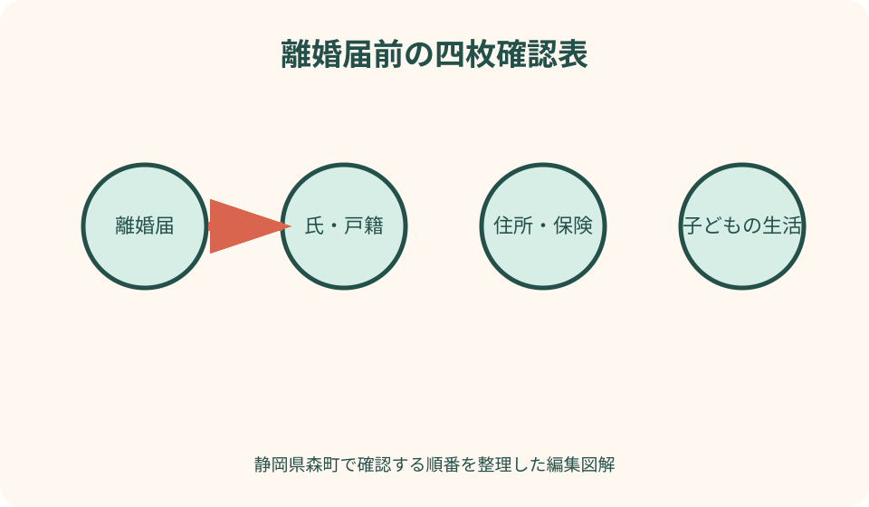
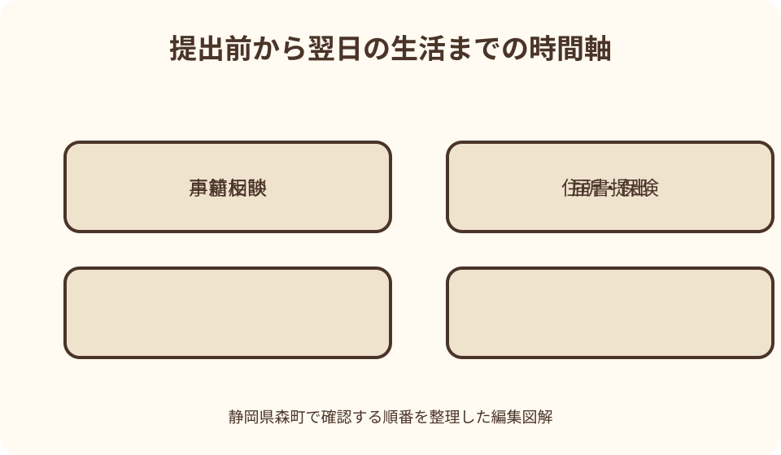

行政手続・証明書｜最終確認 2026-08-10
静岡県森町の離婚届を出す前に確認｜戸籍・住所・子どもの手続きを分ける
離婚届は、夫婦関係を戸籍へ届け出る手続です。届書が受理されても、住所、マイナンバーカード、国民健康保険、年金、子どもの戸籍、児童手当、医療証、学校、住まい、口座が一括して希望どおり変わるわけではありません。森町公式は協議離婚と裁判離婚の届出人・期間・必要物を分け、離婚後の氏や子の氏には別の届出・裁判所手続が関係すると案内しています。提出日だけを決める前に、戸籍の成立、翌日からの生活、安全、子どもの予定を四つの表へ分けます。

編集イラスト離婚届と離婚後の生活手続を一枚に重ねない
最初に四つの紙を用意します。一枚目は離婚届、二枚目は氏と戸籍、三枚目は住所と保険等、四枚目は子どもの生活です。一つの受付印を四枚すべての完了印にしません。
離婚届には法律上の身分関係を届ける役割があります。一方、転居届は実際の居住、児童手当は受給者、健康保険は資格、学校は在籍と通学を扱い、判断する部署や基準日が異なります。
家族の予定表には提出希望日だけでなく、その前に相談する日、離婚後に証明書を取得できる見込み、住まいを移る日、子どもの登校・通園日を置きます。
この記事は協議内容や親権、財産、養育費の法的結論を出すものではありません。合意が難しい、書面の意味が分からない、期限が迫る場合は弁護士や家庭裁判所等へ相談します。
協議離婚と裁判離婚で提出条件を分ける
森町公式は、夫婦の話合いによる協議離婚と、調停・審判・判決等による裁判離婚を分けています。自分の手続がどちらかを先に確定します。
協議離婚は届出により効力が生じ、成人の証人二人の署名が必要と案内されています。証人へ頼む前に、記入欄と訂正方法を住民生活課へ確認します。
裁判離婚は成立・確定等の日と届出期間が関係し、調停調書等の謄本など事件に応じた書類が必要になります。受け取った裁判書類の名称を伝えて確認します。
裁判書類に書かれた日、役場へ出す日、離婚後の戸籍が確認できる日を同じ日だと思わず、次の申請に戸籍証明が必要なら発行可能時期を聞きます。調停成立後に相手方が先に届出をする可能性、事件番号や確定証明書等の確認も、手元の書類名を読み上げて窓口へ尋ねます。裁判所で受け取った一式から自己判断で書類を抜かず、原本返却の有無も提出前に確認します。
届出先・届出人・受付時間を提出日前に確定する
森町公式は、夫婦の本籍地または夫・妻の所在地の市区町村を届出先として案内しています。森町へ出せるかを本籍と現在地から確認します。
協議離婚と裁判離婚では届出人の説明が異なります。家族が代わりに署名できる、窓口へ持参すれば届出人になれるとは考えません。
夜間・休日に届書を預けられる場合でも、内容審査、関連する住所・保険・手当の受付、即日の証明発行が同じ時間に行われるとは限りません。
記念日や引越日に受理日を合わせたい場合は、不備があったときの連絡と補正の扱いを事前に聞きます。日付を優先して未確認欄を残さないようにします。
届書・本人確認・該当書類を三つの封筒へ分ける
第一の封筒には離婚届書を入れ、協議離婚なら夫婦と証人の各欄、未成年の子に関する欄、連絡先を記入前後に確認します。消える筆記具は使いません。
第二の封筒には森町公式が掲げる本人確認書類を用意します。顔写真付き一枚か複数書類かなど組合せがあるため、手元の書類名を電話で伝えます。
第三の封筒には、該当者の国民健康保険資格確認書、氏が変わる人のマイナンバーカード、裁判離婚の謄本等を入れます。全員一律の持参物ではありません。
戸籍謄本の添付について制度変更が案内されていても、外国籍、文字訂正、複雑な戸籍、裁判書類など個別事情を一般化しません。事前審査を依頼できるか住民生活課へ聞きます。
親権・監護・養育費を届書の一欄で終わらせない
未成年の子がいる場合、適用される法令と届書様式を提出時点で確認します。制度改正の前後で説明が変わるため、古い記入例を保存して使い回しません。
親権者の記載と、日常の監護、住む場所、学校、医療、送迎、連絡、費用の実行計画は同じではありません。子どもごとの生活表を別に作ります。
養育費や親子交流について合意を作る場合は、口頭で済ませず、公正証書や調停等を含む方法を法律の専門家へ相談します。将来の履行を記事で保証できません。
子どもへ説明する時期と内容は年齢・安全・家庭事情で異なります。届書提出日に突然生活が変わる状態を避け、学校や園へ伝える範囲も子どもの利益を中心に相談します。

良い点
森町の離婚届ページは、協議・裁判の違い、届出先、届出人、必要物、離婚後の氏、子の氏、不受理申出まで一つの入口で確認できます。
子どもに関しては、児童扶養手当や離婚後の養育に関する案内が別ページにあり、戸籍届だけで終わらない相談先へ移れます。
住民生活課へ事前に届書を見てもらえるか相談すれば、証人欄、文字、子どもの欄、裁判書類など、提出日に気付きにくい点を質問できます。
町なかの同じ庁舎で複数担当へ相談できても、情報共有や手続完了が自動とは限りません。自分の四枚表を窓口ごとに更新できる点が実務上の強みです。
離婚後の氏を戸籍・カード・日常名へ分ける
婚姻で氏を変えた人が離婚後にどの氏を称するかは、戸籍の届出として確認します。現在の氏を当然にそのまま使える、必ず元へ戻ると自己判断しません。
森町公式は、離婚後も婚姻中の氏を称する場合の別の届を案内しています。提出できる期間と、離婚届との同時提出・後日提出の違いを確認します。
戸籍上の氏が決まっても、マイナンバーカード、保険、免許、銀行、勤務先、学校、各種契約の表示はそれぞれ変更手続が必要です。
仕事上の旧姓・通称使用は、戸籍の氏とは別に勤務先や資格発行者の規則を確認します。戸籍届の選択だけで全機関の表示を統一できるとは限りません。
子の氏と戸籍は親権者の決定と分ける
離婚後、親と子の氏が異なることがあります。親権者になった親の戸籍へ子が自動的に移ると考えず、現在の戸籍と希望する状態を住民生活課へ示します。
森町公式は、子の氏を変更したい場合に家庭裁判所の許可申立てと、その後の市区町村での入籍届を案内しています。順序を入れ替えません。
子が複数いる場合は一人ずつ、氏、戸籍、住所、親権、監護、学校、保険を表にします。兄弟姉妹だから全手続が同じとは限りません。
旅行、受験、就職、口座開設などで戸籍証明が必要になる予定があるなら、記載が反映される時期と請求先を確認し、直前に急いで取得しません。
住所を変えるかどうかは実際の居住から判断する
離婚届は住所異動届ではありません。同居を続ける、町内で転居する、町外へ転出する、森町へ転入するのどれかを実際の予定から分けます。
転居先が未定でも、住民票だけを便宜上先に動かす方法を取りません。生活の本拠、届出日、必要書類を住民生活課へ相談します。
世帯主変更や世帯分離が関係する場合も、離婚した事実だけで自動処理されると考えず、同住所に誰が住み、生計がどうなるかを伝えます。
住所を知られたくない安全上の事情がある人は、通常の転居相談より前に支援措置や相談窓口へつながります。相手方と同席して住所を調整することを前提にしません。
子どもの手当・保険・医療証を別々に確認する
児童手当は誰が受給者になるか、子と別居するか、公務員かなどで手続が変わります。離婚届の受理だけで受給者が希望どおり替わるとは限りません。
児童扶養手当は離婚した人全員へ自動支給される制度ではありません。対象児童、監護、生計、所得、公的年金、同居等の条件を町公式と担当へ確認します。
子どもの健康保険は、どの保険へいつ加入するか、資格喪失と取得、勤務先の証明を確認します。無保険期間を作らない工程を各保険者へ相談します。
こども医療費受給者証は保険・住所・保護者等の変更が関係するため、健康こども課へ必要な変更届と開始日を確認します。古い証をそのまま使い続けません。
学校・園・日常連絡は子どもの生活日から逆算する
転居で通学区域が変わる可能性がある場合、物件契約や転居届の前に学校教育課へ予定住所と時期を伝えます。離婚だけを理由に転校が決まるとは限りません。
保育所・幼稚園は、住所、保護者、就労、世帯状況、引落口座、緊急連絡先の変更を担当へ確認します。利用継続や優先順位を自己判断しません。
学校・園へ伝える情報は、子どもの安全、送迎権限、緊急連絡、氏の表示、配布物の送付を中心にします。家庭内の詳細を必要以上に共有しません。
提出日の翌朝から迎えに行く人や帰宅先が変わるなら、先に書面で合意・連絡できる範囲を確認します。口頭伝言だけで子どもの引渡し先を変更しません。

注文したい点
離婚届の町公式ページから、氏、住所、国保、年金、児童手当、医療証、学校へ進む『届出後チェックリスト』が一枚で開けると、窓口の行き漏れを減らせます。
制度改正時は、適用日、届書様式、提出済みの人への扱いを同じページで時系列表示してもらえると、古い検索結果との区別が明確になります。
子どもの手続は、父母どちらが申請するかだけでなく、同居・別居、保険、学校、DV避難等の相談入口を安全に分岐して示してほしいところです。
夜間受付では、預かり後に誰からどの番号へ連絡が来るか、関連手続はいつ開庁窓口で行うかを、提出者が持ち帰れる案内にしてほしいです。
安全に不安がある場合は通常順序を中断する
暴力、脅迫、監視、端末の位置共有、経済的拘束、子どもの連れ去りへの不安がある場合は、夫婦で書類をそろえる通常手順を優先しません。
緊急の危険は110番、負傷や生命の危険は119番を使い、配偶者暴力相談支援機関、警察、森町の相談担当等へ安全な端末・場所から連絡します。
共有端末の検索履歴、クラウド、位置情報、郵便物から相談が知られる可能性があります。消去が常に安全とは限らないため、支援者へ端末利用も相談します。
不受理申出は対象となる戸籍届と本人確認を町公式で確認します。これだけで住居や接触の安全が確保される制度とは考えず、複数の支援を組み合わせます。
提出当日は受付結果と未完了を分けて記録する
窓口では届書を出す前に、本人確認、裁判書類、氏、子の欄を確認し、受理・補正・受理証明等の扱いを聞きます。急いで次の窓口へ移りません。
受付後は離婚届、氏の届、住所異動、マイナンバーカード、国保、年金、子どもの各制度へ、完了・追加資料・後日確認の印を付けます。
戸籍証明や住民票をその場で取る必要がある場合、変更後の内容がいつ反映されるかを確認します。反映前の証明を提出先へ送らないようにします。
提出控え、受理証明、裁判書類、申請書控えは用途が違います。提出先から求められた証明書名を正確に聞き、余分な戸籍情報を渡しません。
住まい・住宅ローン・賃貸契約を戸籍届から切り離す
持家に住み続ける人、退去する人、住宅ローンを負う人、登記名義人が一致するとは限りません。登記事項、金銭消費貸借契約、返済口座、連帯保証等を別の資料で確認します。
財産分与で不動産を移す合意があっても、登記や金融機関の手続、税務が自動で完了するわけではありません。契約前に司法書士、金融機関、税理士等へ相談します。
賃貸住宅では、契約者、連帯保証、家賃口座、入居者、退去予告、鍵を確認します。離婚したことだけを理由に一方が契約から外れたと考えません。
転居前後の郵便、電気・ガス・水道、通信、火災保険、駐車場も契約者別に並べます。相手の同意なく停止すると生活や安全へ影響するため、専門相談を使います。
離婚後の戸籍証明・住民票は提出目的から選ぶ
勤務先、学校、金融機関等から証明を求められたら、『戸籍を持ってきて』だけで取得せず、戸籍全部事項・個人事項、受理証明、住民票のどれかを正式名称で確認します。
離婚事項が記載された戸籍が必要でも、本籍地、届出地、戸籍の編製状況によって請求先や反映時期を確認する必要があります。提出直後に必ず取れるとは考えません。
住民票では世帯主・続柄、本籍、マイナンバー等の記載を省略するかが提出目的で違います。不要な個人情報を載せた証明書を広く配りません。
証明書を取得した日、提出先、返却の有無を記録し、画像を家族の共有チャットへ残し続けません。本人確認と保管の責任者を決め、不要になれば安全に処分します。
代案・結論
届書の記入に不安があるなら、提出日を急ぐ前に住民生活課へ事前確認を依頼します。完成させてから見せるのではなく、不明欄を付箋で示します。
夫婦間の合意が整わない場合は、相手の署名を代わりに書く、証人へ内容を偽って頼むことをせず、弁護士、法テラス、家庭裁判所等へ相談します。
子どもの新住所や保険が提出日までに確定しない場合は、戸籍届と生活手続の順序を各担当へ相談し、未確定を事実として記録します。
結論は、離婚届を一つのイベントにせず、戸籍、氏、住所、子どもの四表で進めることです。誰が、どこへ、何を、いつ確認したかが残れば、提出後の生活を立て直せます。
大石の視点
離婚前後に住まいを変える相談では、不動産の契約より先に、安全に連絡できる人、今夜眠る場所、子どもの翌日の動線を確認するべきだと考えます。
持家や共有不動産があっても、離婚届で所有名義や住宅ローンが自動的に変わるわけではありません。登記、債務、占有、売却は別の専門相談です。
森町では車が日常の移動を支える家庭も多く、車の名義、保険、鍵、送迎が変わると生活へ直結します。財産一覧だけでなく一週間の移動表を作ります。
手続が多い時ほど、全部を一日で終えることを成功にしません。本人と子どもの安全を守り、間違った届出を避け、次の担当が分かる状態を一つずつ作ります。
公式情報・確認先
掲載内容は次の一次情報を基礎に整理しました。営業、料金、催し、交通は変わるため、出発前または手続き前にリンク先で最新情報を確認してください。
- 離婚届（静岡県森町、2026-08-10確認）
- 結婚・離婚（静岡県森町、2026-08-10確認）
- 児童扶養手当について（静岡県森町、2026-08-10確認）
- 離婚後の子の養育に関するルールの変更について（静岡県森町、2026-08-10確認）
- 離婚届（法務省、2026-08-10確認）